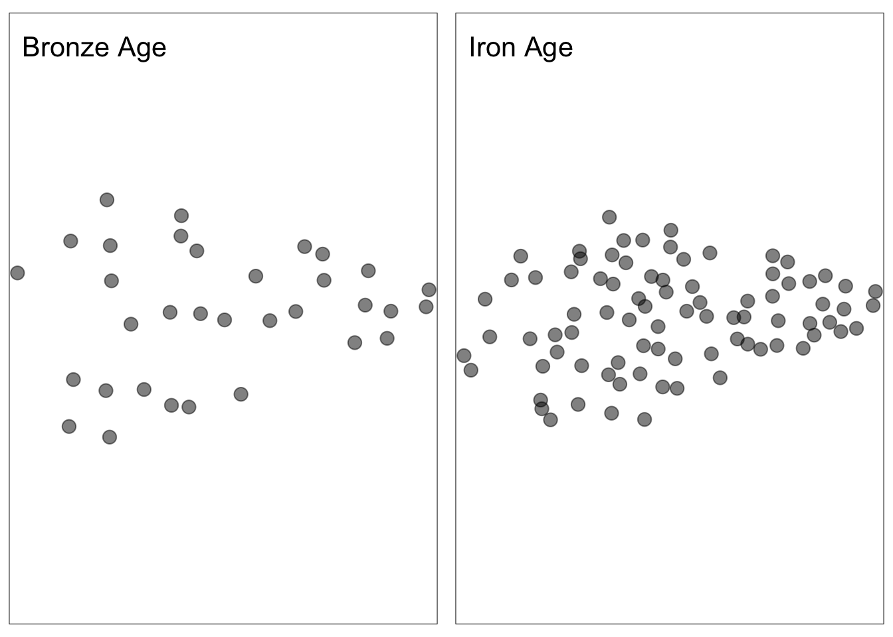
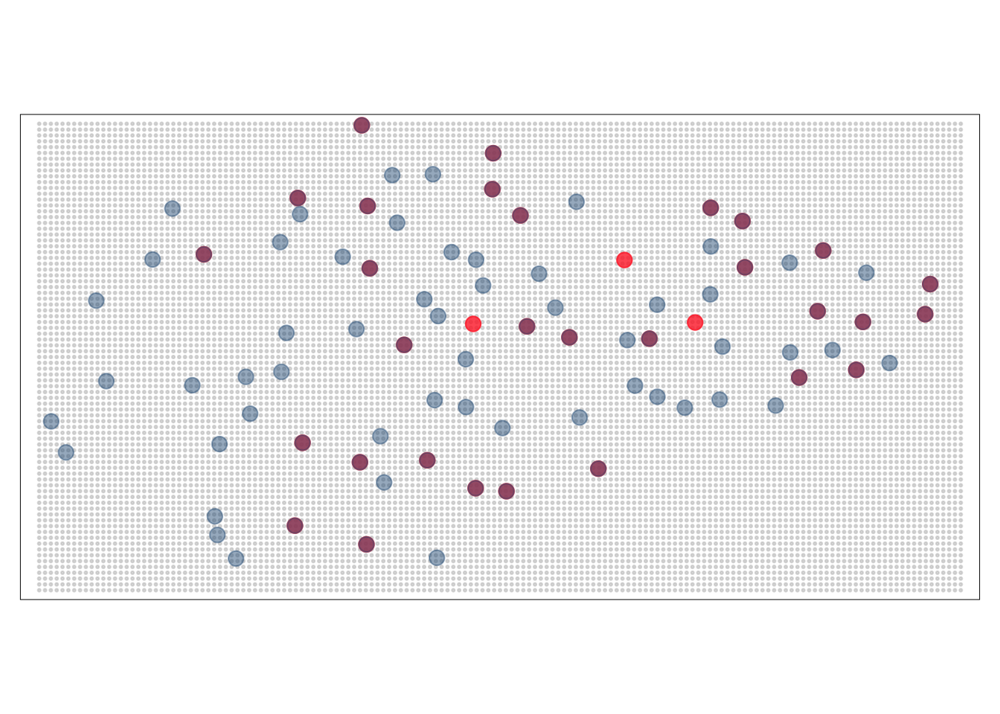
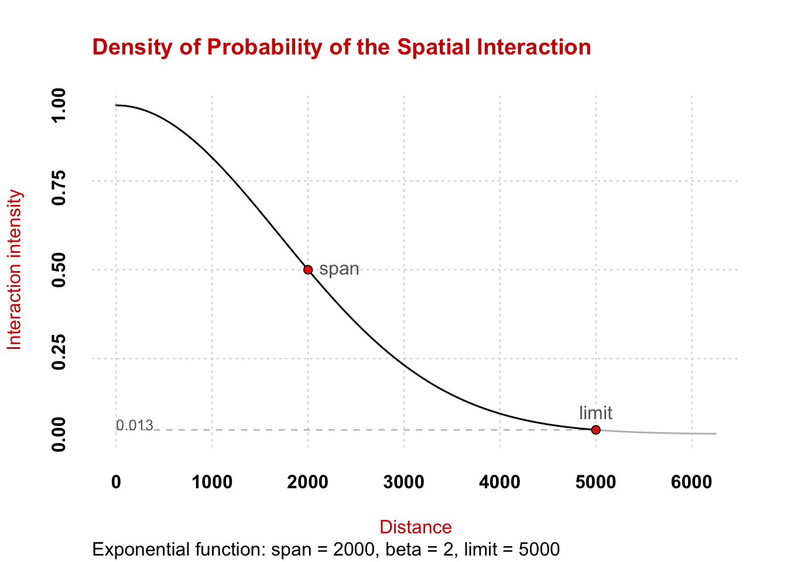
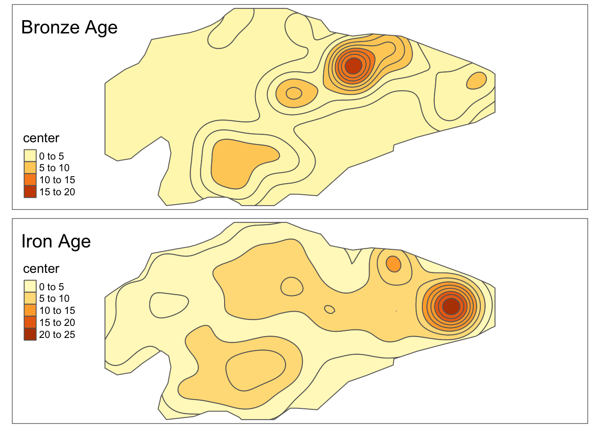

Code
library(sf)
library(dplyr)
library(tmap)
library(potential)library(sf)
library(dplyr)
library(tmap)
library(potential)# load survey
survey = st_read("../data/vect/data.gpkg", layer = "njs_survey", quiet = TRUE)
# load sites data
sites = readRDS("../data/tab/njs_sites_LONG_SF.rds")
# filter Bronze Age sites
sites_ba = sites %>% filter(time_start == -1400)
# filter iron age sitees
sites_ia = sites %>% filter(time_start == -900)
# map BA sites
map_ba = tm_shape(sites_ba) +
tm_dots(size = 0.5, alpha = 0.5) +
tm_layout("Bronze Age")
# map IA sites
map_ia = tm_shape(sites_ia) +
tm_dots(size = 0.5, alpha = 0.5) +
tm_layout("Iron Age")
# combine two maps
tmap_arrange(map_ba,map_ia, nrow = 1)
grid = create_grid(x = sites, res = 250)
tm_shape(grid) +
tm_dots(col = "grey", alpha = 0.5) +
tm_shape(sites_ba) +
tm_dots(size = 0.5, alpha = 0.8, col = "firebrick1") +
tm_shape(sites_ia) +
tm_dots(size = 0.5, alpha = 0.5, col = "steelblue4") +
tm_legend()
#bronze age sites
d_ba <- create_matrix(x = sites_ba, y = grid)
#bronze age sites
d_ia <- create_matrix(x = sites_ia, y = grid)
# matrix distances
d_ia[1:5,1:5] 1 2 3 4 5
1 34046.04 33824.90 33604.16 33383.84 33163.94
2 18151.42 18010.31 17871.59 17735.31 17601.53
3 18851.84 18644.92 18439.06 18234.31 18030.70
4 14802.00 14570.11 14338.83 14108.19 13878.22
5 18806.09 18581.10 18356.77 18133.10 17910.13Model interaction
plot_inter(fun = "e", span = 2000, beta = 2, limit = 5000)
# potential for bronze age
grid$pot_ba <- potential(x = sites_ba,
y = grid,
d = d_ba,
var = "size_ha",
fun = "e",
span = 2000,
beta = 2
)
# potential for iron age
grid$pot_ia <- potential(x = sites_ia,
y = grid,
d = d_ia,
var = "size_ha",
fun = "e",
span = 2000,
beta = 2
)Compute Potential
equipot_ba = equipotential(x = grid,
var = "pot_ba",
nclass = 10,
mask = survey
)
equipot_ia = equipotential(x = grid,
var = "pot_ia",
nclass = 10,
mask = survey
)
ba = tm_shape(equipot_ba) +
tm_polygons(col = "center") +
tm_layout(title = "Bronze Age")
ia = tm_shape(equipot_ia) +
tm_polygons(col = "center") +
tm_layout(title = "Iron Age")
tmap_arrange(ba,ia)